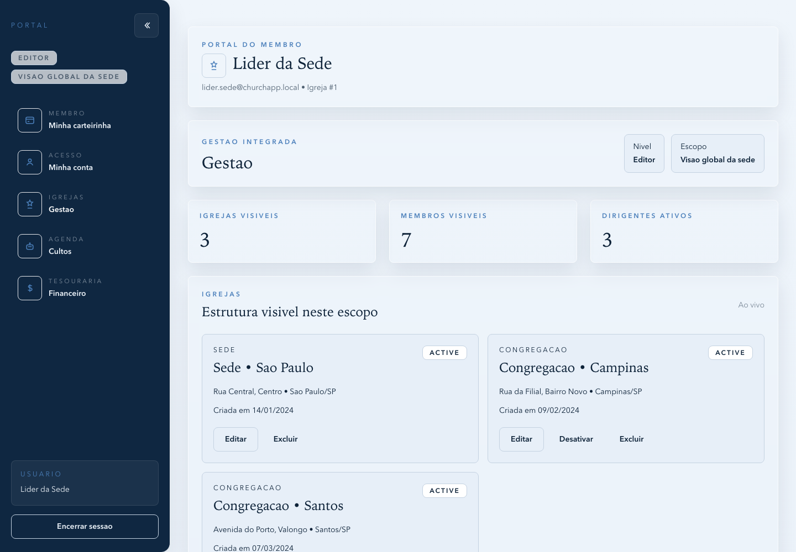
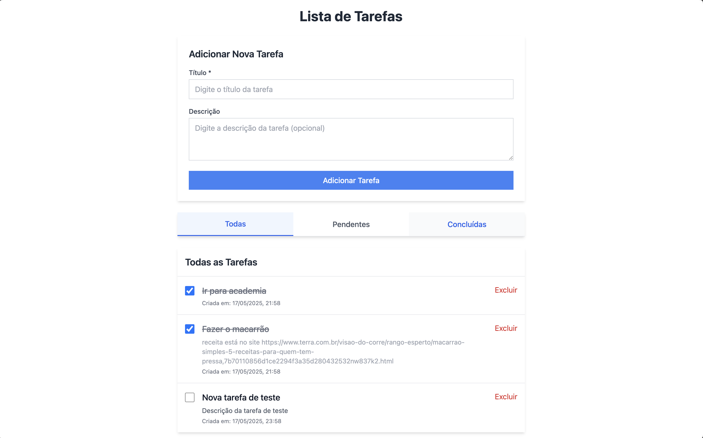

Arquitetura de soluções
Definição de domínios, contratos, boundaries, integrações, padrões e decisões estruturais para sistemas distribuídos.
Engenheiro de Software · Arquitetura de Soluções · AWS Serverless
Desenho e evoluo plataformas backend, arquiteturas serverless na AWS, integrações orientadas a eventos e fluxos de entrega que transformam requisitos complexos em software sustentável, observável e pronto para escalar.
Posicionamento
Minha atuação atual está concentrada em backend com Node.js, NestJS, Express e soluções serverless na AWS, desenhando contratos, integrações, orquestração de eventos e decisões estruturais para sistemas que precisam escalar com clareza técnica.
Também atuo com React, Next.js, Angular, Vue, React Native e Flutter quando a solução pede visão ponta a ponta. Em paralelo, sigo como estudante pesquisador de IA, buscando aplicabilidade de IA em computação aplicada e conectando pesquisa com problemas reais de software.
Áreas de atuação
Definição de domínios, contratos, boundaries, integrações, padrões e decisões estruturais para sistemas distribuídos.
Node.js, NestJS, Express, Java, Spring Boot, AWS Serverless, orquestração de eventos e persistência com bancos relacionais e não relacionais.
React, Next.js, Angular, Vue, React Native e Flutter para interfaces e fluxos conectados ao core do negócio.
Playwright, Cypress, Jest, documentação, mentoria, refinamentos e evolução contínua da forma de entregar.
Método
Um fluxo pensado para alinhar contexto de negócio, desenho técnico, confiabilidade operacional e autonomia do time.
Entendo objetivos, regras, restrições, integrações e sinais de risco antes de propor a arquitetura.
Estruturo domínios, contratos, dados, responsabilidades e fronteiras para sustentar evolução.
Construo APIs, aplicações e integrações com código legível, rastreável e orientado a operação.
Uso testes, automação, documentação e validação para proteger comportamento e reduzir ruído.
Observo métricas, removo gargalos e ajudo o time a ganhar maturidade técnica de forma contínua.
Projetos selecionados
Uma curadoria de repositórios públicos que mostra plataformas completas, serviços backend, integrações de produto e fundamentos de computação.

Case principal
Plataforma de gestão e operações para igrejas com separação clara entre API e frontend, modelagem de permissões por escopo, fluxos financeiros e desenho orientado a governança.

Serviço em NestJS e TypeScript para encurtamento de URLs, com organização voltada a módulos, documentação de API e base pronta para evolução operacional.
Interpretador em Python que evidencia fundamentos de linguagem, parsing e execução simbólica, reforçando profundidade em ciência da computação.
Sistema web de gestão financeira pessoal com dashboard, registro de renda e saídas, controle de compras parceladas e integração com Google Sheets como camada de persistência.
Experiência
Atuação em backend com foco em soluções serverless na AWS, orquestração de eventos, dados relacionais e não relacionais, além de evolução técnica de plataformas.
Desenvolvimento de plataforma web integrada ao gov.br e ao sistema acadêmico, conectando frontend em Angular, serviços em Spring Boot e fluxos institucionais.
Liderança técnica em produtos críticos, decisões arquiteturais, mentoria, estruturação de processos e gestão interina de times de Front-end e UX/UI.
Entrega full-stack para soluções ERP e agronegócio, com definição de padrões arquiteturais para web e backend, além de workshop técnico para o time.
Análise de sistema, integrações e aplicações institucionais com Java, Spring Boot, JSF e bancos relacionais, conectando operação diária e evolução do software.
Formação
Instituto Federal do Espírito Santo · Estudante pesquisador de IA com foco em aplicabilidade em computação aplicada
Instituto Federal do Espírito Santo · Engenharia de Software
Instituto Federal do Espírito Santo
Contato
Estou aberto a oportunidades e conversas sobre software engineering, solution architecture, liderança técnica e aplicabilidade de IA em produtos e operações.